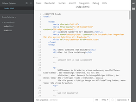
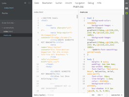
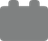
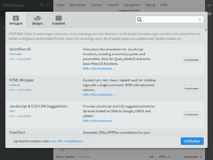
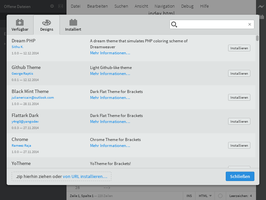

Brackets
Dieser Artikel wurde für die folgenden Ubuntu-Versionen getestet:
Ubuntu 16.04 Xenial Xerus
Ubuntu 14.04 Trusty Tahr
Zum Verständnis dieses Artikels sind folgende Seiten hilfreich:
Brackets  ist ein Editor zur Entwicklung von Webanwendungen. Das von der Fa. Adobe initiierte und betreute Programm steht unter der MIT-Lizenz und ist vollständig auf Deutsch lokalisiert. Programmiert wurde es in HTML, CSS und JavaScript.
ist ein Editor zur Entwicklung von Webanwendungen. Das von der Fa. Adobe initiierte und betreute Programm steht unter der MIT-Lizenz und ist vollständig auf Deutsch lokalisiert. Programmiert wurde es in HTML, CSS und JavaScript.
Funktionen:
Live-Vorschau (browserabhängig)
Integriertes Bearbeiten von CSS und JavaScript
Syntax-Hervorhebung für ca. 30 Programmiersprachen
Visuelle Anzeige von Farbcodes (welcher Farbe entspricht
#0083e8?)Einfache Projektverwaltung (nicht für gehobene Ansprüche)
Designs, um das Aussehen an das diverser anderer Entwicklungsumgebungen anzupassen
Über diese Kernfunktionen hinausgehende Fähigkeiten lassen sich mit Hilfe von Erweiterungen (Extensions) realisieren. Nach mehreren Jahren Entwicklungszeit wurde Ende November 2014 die Version 1.0 veröffentlicht.
Voraussetzungen¶
Die Live-Vorschaufunktion im Browser benötigt Chromium oder Google Chrome. Ansonsten wird der jeweilige Standardbrowser genutzt, in dem die Vorschau manuell aktualisiert werden muss.
Installation¶
 Das Programm ist nicht in den offiziellen Paketquellen enthalten.
Das Programm ist nicht in den offiziellen Paketquellen enthalten.
Fremdpaket¶
Über GitHub 
 werden DEB-Pakete für 32-/64-bit-Systeme angeboten (ca. 30 MiB), die heruntergeladen und manuell installiert [1] werden müssen. Die ebenfalls angebotene Variante +Extract bundle ist nur dann relevant, wenn CSS-Informationen aus einer Photoshop-Datei (.psd) extrahiert werden sollen. Das Installationsverzeichnis ist vorgegeben: /opt/brackets/.
werden DEB-Pakete für 32-/64-bit-Systeme angeboten (ca. 30 MiB), die heruntergeladen und manuell installiert [1] werden müssen. Die ebenfalls angebotene Variante +Extract bundle ist nur dann relevant, wenn CSS-Informationen aus einer Photoshop-Datei (.psd) extrahiert werden sollen. Das Installationsverzeichnis ist vorgegeben: /opt/brackets/.
Hinweis!
Fremdpakete können das System gefährden.
Eine Aktualisierung muss bei dieser Installationsvariante ebenfalls manuell erfolgen: nach Deinstallation der bisherigen Version lädt man ein neues DEB-Paket herunter und und wiederholt die Installation. Persönliche Einstellungen bleiben erhalten.
PPA¶
Es gibt auch ein inoffizielles "Personal Packages Archiv" (PPA) [2], dass zur Installation genutzt werden kann. Enthalten ist aber nur die Variante +Extract bundle (siehe oben).
Adresszeile zum Hinzufügen des PPAs:
ppa:webupd8team/brackets
Hinweis!
Zusätzliche Fremdquellen können das System gefährden.
Ein PPA unterstützt nicht zwangsläufig alle Ubuntu-Versionen. Weitere Informationen sind der  PPA-Beschreibung des Eigentümers/Teams webupd8team zu entnehmen.
PPA-Beschreibung des Eigentümers/Teams webupd8team zu entnehmen.
Damit Pakete aus dem PPA genutzt werden können, müssen die Paketquellen neu eingelesen werden.
Nach dem Aktualisieren erfolgt die Installation über folgendes Paket [3]:
brackets (ppa)
 mit apturl
mit apturl
Paketliste zum Kopieren:
sudo apt-get install brackets
sudo aptitude install brackets
Verwendung¶
Bei Ubuntu-Varianten mit einem Anwendungsmenü findet man einen Programmstarter [4] unter "Software-Entwicklung -> Brackets". Ein integrierter Webserver kümmert sich bei HTML-Seiten um die Darstellung im Browser.
Brackets ist ein nützliches Programm für fortgeschrittene Webentwickler und (JavaScript)-Programmierer, das eine vollständige Entwicklungsumgebung (IDE) zwar nicht ersetzen, aber zumindest in Teilbereichen gut ergänzen kann. Einsteiger sind in der Regel mit einfacheren Editoren besser bedient. Allerdings hat die Sofortanzeige vom HTML-Seiten im Browser auch in diesem Bereich durchaus ihre Reize.
|  |
| Editor-Fenster |
|  |
| Geteilte Ansicht (vertikal) |
Eine Einführung in das Arbeiten mit und die speziellen Funktionen von Brackets ist online zu finden: How to Use Brackets
Einstellungen¶
 Derzeit bestehen die Einstellungen aus drei Unterpunkten, die über "Datei -> Erweiterungs-Verwaltung" oder das nebenstehende Symbol zu erreichen sind:
Erweiterungen installieren
Designs installieren
Übersicht der installierten Erweiterungen und Designs
|  |
| Erweiterungen installieren |
|  |
| Designs installieren |
Programmeinstellungen werden in der Datei ~/.config/Brackets/brackets.json im Homeverzeichnis gespeichert, wobei defaultPreferences.json im selben Ordner eine Übersicht enthält, welche Einstellungen möglich sind. Beide Dateien können auch über den Menüpunkt "Debug -> Einstellungsdatei öffnen" (ab Version 1.4) direkt geöffnet werden.
Erweiterungen¶
Da Brackets mehr oder weniger nur die grundlegenden Funktionen eines Editors abdeckt, existieren Erweiterungen, um bei Bedarf bestimmte Funktionen nachzurüsten. Ein paar Beispiele:
Beauty
- HTML, CSS und JavaScript automatisch formatierenCode folding
- erweitert Brackets zu einem Falteneditor (ab Version 1.3 integriert)Emmet
- HTML- und CSS-WorkflowBrackets Git
- Git-Integration
Mehr Informationen und eine ausführliche Übersicht vorhandener Erweiterungen bieten die folgenden Seiten:
Brackets Extensions
- Installation, Deinstallation usw.Brackets Extensions Registry
- ÜbersichtBrackets Extensions Weekly
- Neuheiten und Updates, TOP 11, etc.
Designs¶
Die Bezeichnung "Designs" ist etwas hochtrabend. In erster Linie geht es um die Anpassung des Code-Highlighting und der vom Programm verwendeten Farben, um diese an die eigenen Vorlieben oder die vorhandenen Gegebenheiten anzupassen. Sehr unpraktisch ist, dass Vorschaubilder fehlen. Für weitere Informationen wird auf die Github-Seite des jeweiligen Entwicklers verwiesen, die inzwischen meist ein oder mehrere Vorschaubilder bietet.
Automatische Update-Benachrichtigung¶
Brackets enthält eine integrierte automatische Benachrichtigungsfunktion, wenn eine neue Programmversion verfügbar ist. Zusätzlich kann man die Update-Prüfung manuell über den Menüpunkt "Hilfe -> Nach Updates suchen" anstoßen. Auch für Erweiterungen gibt es eine Benachrichtigung, wenn – beispielsweise nach einer Aktualisierung von Brackets – ein Update vorliegt.
Problembehebung¶
Telemetrie abschalten¶
Brackets übermittelt in der Voreinstellung ungefragt und hinter dem Rücken des Anwenders Informationen über die Nutzung des Programms. Als Argument für dieses Verhalten wird angeführt, nur auf diesem Weg könne das Programm noch besser an die Wünsche der Anwender angepasst werden (siehe auch Introducing Brackets Health Report ).
Die zu übermittelnden Daten dieser mit Version 1.3 eingeführten Funktion können über den Menüpunkt "Hilfe -> Statusbericht" eingesehen werden. An gleicher Stelle kann die Übermittlung bei Bedarf deaktiviert werden.
Links¶
Wiki
- Dokumentation
Adobe Brackets - Wikipedia
Markieren und wegklappen: Code-Editor Brackets 1.5 verfügbar
- heise OpenSource, 10/2015Brackets 1.3 legt mehr Wert auf Privatsphäre
- heise Developer, 04/2015Webentwicklung
 Übersicht
Übersicht
- Erstellt mit Inyoka
-
 2004 – 2017 ubuntuusers.de • Einige Rechte vorbehalten
2004 – 2017 ubuntuusers.de • Einige Rechte vorbehalten
Lizenz • Kontakt • Datenschutz • Impressum • Serverstatus -
Serverhousing gespendet von